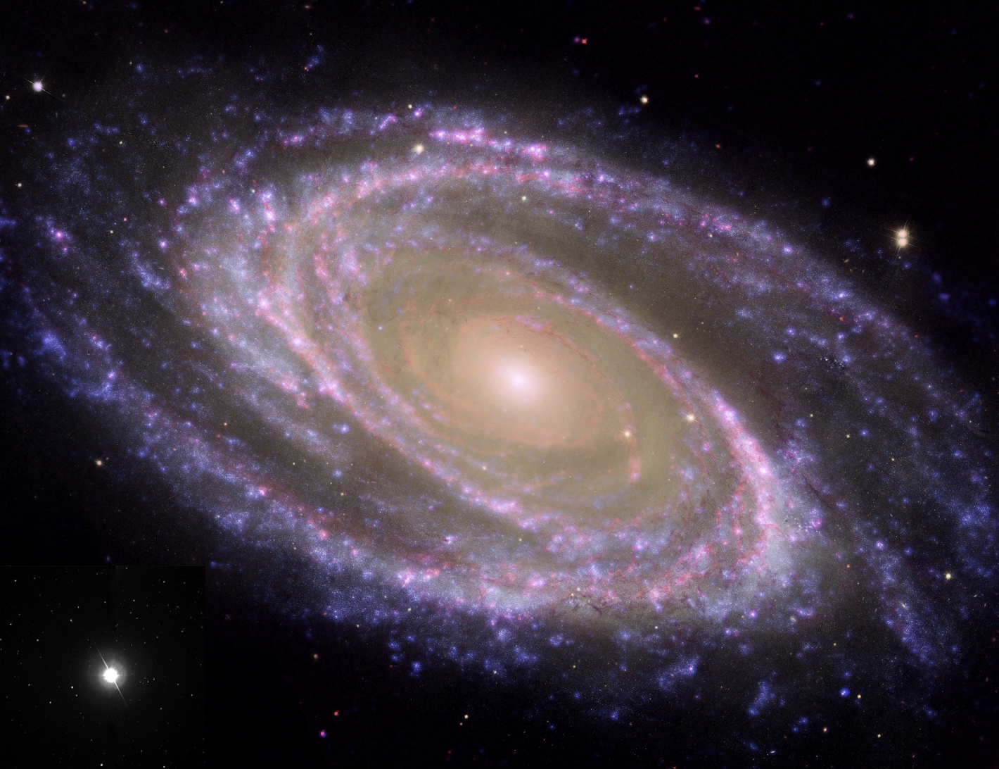
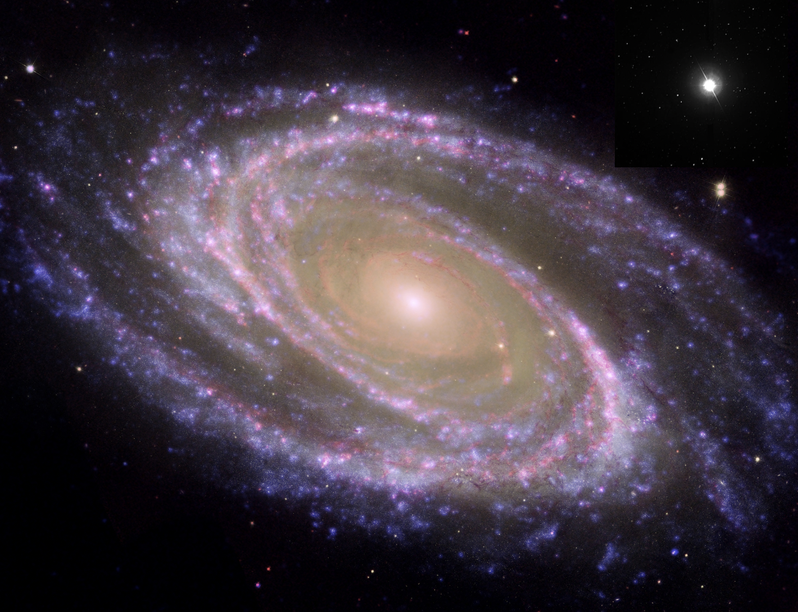

Forrige side🙂 🙁parallakse
 
Nettopp ja! Her ser du bildene fra begge teleskopene! Ser du hvordan stjerna står på et annet sted i forhold til den fjerne galaksen, på samme måte som reven?. Men hvis parallaksevinkelen p hadde vært mye mindre så ville ikke stjerna flyttet på seg like mye, og kanskje ville den tilsynelatende (innenfor oppløsningsevnen til teleskopet) stått på samme sted. Derfor er det viktig å få denne vinkel (forflytningen) stor nok. Så da spør jeg en gang til, hva kan man gjøre for å få størst mulig p for et objekt slik at parallakseeffekten blir synlig? B = dp (hvor p må være i radianer) Jeg har et svar!